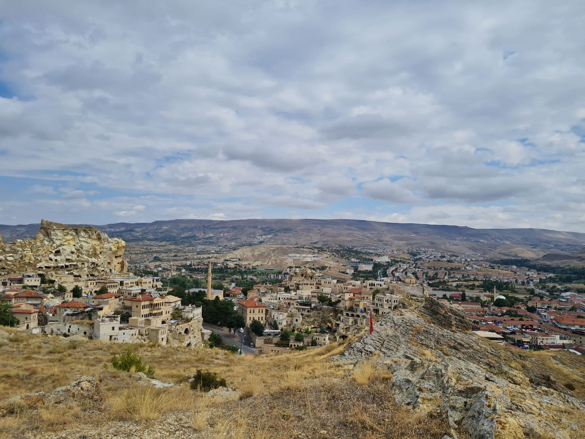
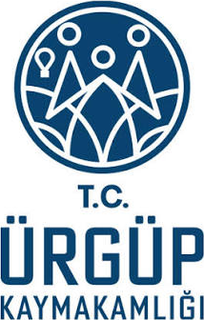
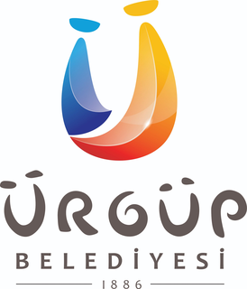
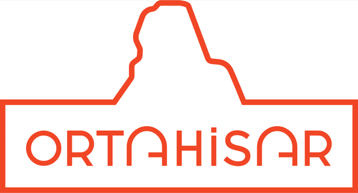
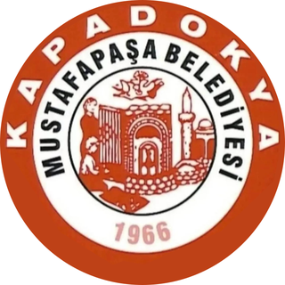
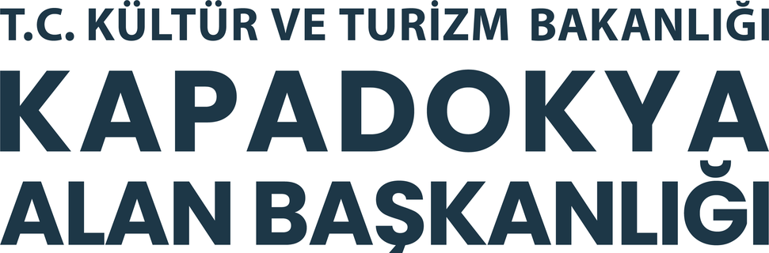

Neden bir çalıştay?
Ürgüp’ün geleceği için ortak akıl masası kuruyoruz.
Ürgüp, Kapadokya’ya gelen yolcunun ilk durağı olmuş bir kent. Bugün bölgedeki rekabet değişti, ziyaretçinin beklentisi değişti. Doluluk oranları ve ziyaretçi başına harcama, kentin geleceği için artık en önemli göstergeler.
Bu çalıştay; yerel yönetimleri, kamu kurumlarını, sektörü ve kent halkını aynı masaya oturtuyor. Amaç güçlü ve zayıf yanlarımızı, fırsatları ve tehditleri birlikte ortaya koymak ve bunlardan somut stratejiler çıkarmak.
Çıkan sonuçlar bir raporla kamuoyuyla paylaşılacak ve bundan sonraki adımların başlangıç belgesi olacak.
Güzergâh
Süreç dört duraktan oluşuyor. Şu an ilk duraktayız: anket açık.
-
1
Ön anket
Şimdi açık
Yaklaşık 10–12 dakika. Yanıtlar anonim. Çalıştayda hangi konuların konuşulacağını bu anket belirleyecek.
Ankete katılın -
2
Çalıştay
15 Aralık 2026
Davetli yaklaşık 200 katılımcı, yuvarlak masalarda Dünya Kafe yöntemiyle çalışacak.
-
3
Rapor
Çalıştayın ardından
Masalardan çıkan bulgular derlenip yayımlanacak ve tüm paydaşlara ulaştırılacak.
-
4
Strateji
Sonraki dönem
Rapor; yerel yönetimlerin ve kurumların atacağı adımlar için ortak başlangıç noktası olacak.
Çalıştay günü
Saatli program, konuşmacılar kesinleştiğinde burada yayımlanacak.
- Tarih
- 15 Aralık 2026, Salı
- Yer
- Mustafa Otel, Ürgüp
- Katılım
- Davetle, yaklaşık 200 kişi
- Yöntem
- Dünya Kafe, GZFT (SWOT) ve TOWS analizi
- Yürütücü
- Deneyimli bir akademisyen moderasyonunda
- Karşılama ve kayıtKatılımcılar masa numaralarını alır.
- AçılışDüzenleyen ve ortak kurumların kısa konuşmaları.
- Konuk konuşmalarTurizm ve kent üzerine ilham veren iki konuşma.
- Anket bulgularıÖn anketten çıkan tablo ve masalara düşen sorular.
- Dünya Kafe masaları: GZFTMasalar güçlü ve zayıf yönleri, fırsat ve tehditleri tartışır; katılımcılar turlar arasında masa değiştirir.
- Öğle arası
- TOWS: bulgulardan stratejiyeMasalar, GZFT çıktılarını eşleştirerek öneri stratejiler üretir.
- Paylaşım ve kapanışMasa sözcüleri sonuçları sunar; rapor takvimi açıklanır.
Konuklarımız yolda
Çalıştayın açılışında, turizm ve kentlerin yeniden doğuşu üzerine söyleyecekleri olan iki tanınmış ismi ağırlayacağız. İsimleri yakında burada açıklayacağız.
Nasıl katılırım?
İki ayrı yol var. Anket herkese açık; çalıştay ise sınırlı kontenjanlı ve davetle yapılacak.
Ankete katılın
Ürgüp’te yaşıyor, çalışıyor ya da Ürgüp’le bağınız varsa görüşünüz bizim için değerli.
- 10–12 dakika sürer
- Yanıtlarınız anonimdir
- Telefondan rahatça doldurulabilir
Çalıştaya katılımcı adayı olmak için başvurun
Masalarda yer almak istiyorsanız başvuru formunu doldurarak katılımcı adayı olun. Katılımcılar, paydaş dağılımı gözetilerek düzenleme kurulunca belirlenir.
- Başvuru formu ankete bağlı değildir
- Rapor yayımlandığında haberdar olmak için de kullanabilirsiniz
Sık sorulan sorular
Çalıştay herkese açık mı?
Hayır. Verimli çalışabilmek için katılım yaklaşık 200 kişiyle sınırlı ve davetle yapılacak. Kamu kurumları, yerel yönetimler, sektör temsilcileri, sivil toplum ve kent halkından dengeli bir katılım hedefleniyor. Başvuru formunu doldurarak değerlendirmeye alınabilirsiniz.
Anket yanıtlarım kimliğimle eşleşir mi?
Hayır. Anket anonimdir. İletişim bilgileriniz yalnızca ayrı başvuru formunda istenir ve anket yanıtlarıyla bağlantılandırılmaz.
Katılım ücretli mi?
Hayır. Çalıştayın tüm giderlerini ÜRTAV ve çalıştay paydaşları karşılıyor; katılımcılar için ücret yoktur.
Neden yalnızca turizm?
Ürgüp’ün ekonomisinin ve kimliğinin merkezinde turizm var. Odağı dar tutmak, bir günlük çalışmadan uygulanabilir sonuçlar çıkarmayı kolaylaştırıyor. Turizmi etkileyen kent sorunları da doğal olarak masalarda konuşulacak.
Sonuçlar ne olacak?
Masalardan çıkan bulgular bir raporda toplanıp yayımlanacak ve paydaşlara dağıtılacak. Rapor, kurumların bundan sonra atacağı adımlar için ortak başlangıç belgesi olacak.
Yanıtını burada bulamadığınız bir soru için bize yazın: urguptav@gmail.com
Düzenleyici kuruluş
Ortaklar




